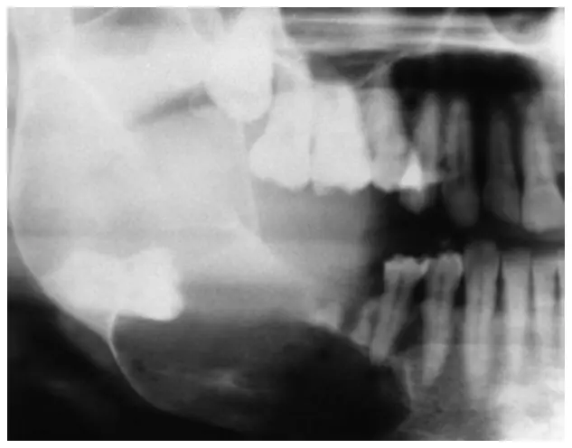
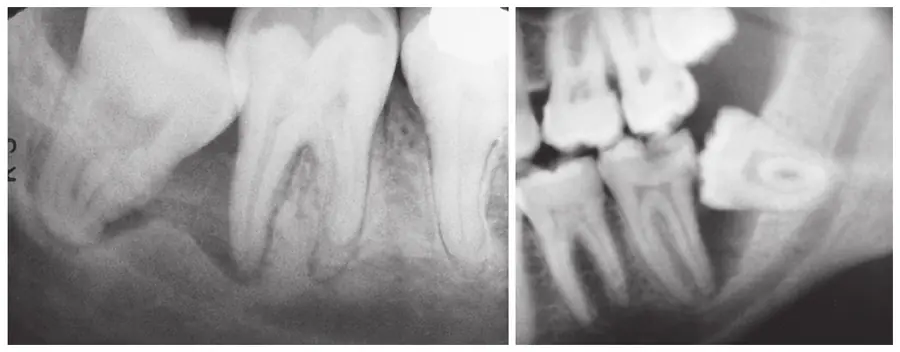

نسخه استخراجشده؛ ترجمه یا تأیید علمی انجام نشده است. وضعیت: captured
اندازهی ساک فولیکولار. اندازهی فولیکول اطراف دندان نهفته میتواند سختی کشیدن را مشخص کند.

تراکم استخوان اطراف. هرچند بعضی سرنخها در رادیوگرافی دیده میشوند، تغییرات در تراکم و زاویهی رادیوگرافیک تفسیر تراکم استخوان بر پایهی کلیشه را غیرقابل اعتماد میکند.
پس بهترین سنجهی تراکم استخوان چیست؟ سن بیمار.
اگر میان مولر دوم و مولر سوم نهفته فضا وجود داشته باشد، رویکرد کشیدن سرراستتر خواهد بود، چون آسیب به مولر دوم کمتر محتمل است.

ولی اگر دندان نهفتگی دیستوانگولار یا افقی باشد، اغلب در تماس مستقیم با مولر دوم مجاور است. برای برداشتن ایمن مولر سوم بدون آسیب به مولر دوم، جراح باید در دو چیز محتاط باشد: فشار الواتورها، و کار با بور هنگام برداشتن استخوان.
و یک ملاحظهی ترمیمی که به رضایتنامه گره میخورد: اگر مولر دوم پوسیدگی یا ترمیم بزرگ داشته باشد یا اندو شده باشد، جراح باید دقت ویژه کند که ترمیم یا بخشی از تاج پوسیده را نشکند. و بیمار باید از پیش دربارهی این احتمال آگاه شود.
جمعبندی این درس در قالب یک نکتهی عملی: سه عاملِ فولیکول، تراکم استخوان و تماس با مولر دوم در طبقهبندیهای زاویه، راموس و عمق دیده نمیشوند، ولی هر سه در فهرست عوامل آسانکننده و دشوارکننده جا دارند — و دو تای اول مستقیماً به سن بیمار وابستهاند.